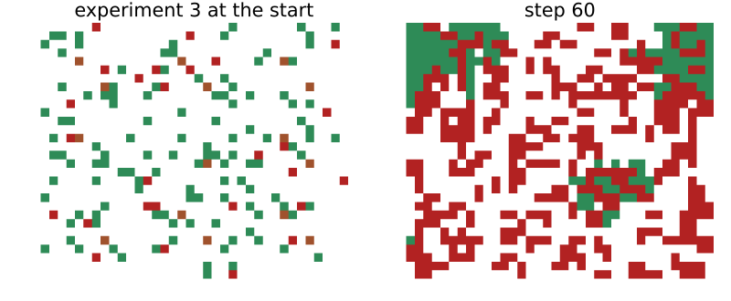
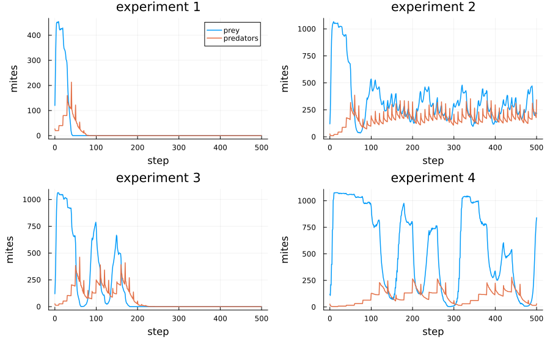
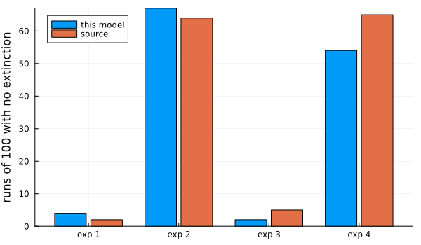

Huffaker’s mites
Simon Frost
Overview
In a classic experiment, Huffaker (1958) kept six-spotted mites, a pest of citrus, with a predatory mite on trays of oranges. On a small, simple universe the predators ate the prey and both died out. Sustained oscillations needed a large, complex universe: oranges partly covered, barriers of petroleum jelly, and wooden posts from which prey could float on air currents to distant oranges. Zsoldos and Stepler (2024) rebuilt the experiment as a cellular automaton in the style of Wa-Tor. They asked how often each universe oscillates. This model follows their published code and is an adaptation. It differs in the rule for posts and in how oscillations are counted.
ENV["GKSwstype"] = "100"
using EcologicalCellularAutomata
using CellularAutomataCore
using Plots
using StatisticsThe model
Each cell is part of an orange and holds at most one mite. Every step, the mites alive at its start act once each, in a random order:
- a predator with a prey next to it eats it, moves into its cell and gains one unit of energy;
- otherwise a mite moves to a random empty neighbour. A predator that moves without eating loses a unit of energy, and dies when it has none.
- A mite that moves and has reached its fertility threshold leaves an offspring in the cell it left.
Prey breed at every move (threshold 1) and predators every tenth (threshold 10). A predator starts with one unit of energy, so it starves at its first move without a meal. A move writes two cells, which no local rule can do. The step is therefore a callback stored with the problem, and the model’s own rule leaves cells unchanged:
prob = problem(:huffaker_mites; experiment=3, seed=1)
model = build(:huffaker_mites)CAModel huffaker_mites
Zsoldos & Stepler (2024) predator and prey mites on oranges
states:
mite::Int8 = 0 ∈ 0:2 # 0 empty, 1 prey, 2 predator
fertility::Int16 = 0 # steps since the mite last bred
energy::Int16 = 0 # the mite's life points
post::Bool = false # a wooden post
parameters:
F_prey = 1 # prey fertility threshold
F_predator = 10 # predator fertility threshold
L_predator = 1 # initial energy of a predator
loss = 1 # energy a predator loses moving without eating
gain = 1 # energy a predator gains by eating
prey_energy = 10 # energy of a prey (never changes)
rule: LocalRule(<anonymous function>, VonNeumann(1))The four experiments of the source are four universes:
- four cells per orange (a 20 × 24 grid);
- nine cells per orange (30 × 36);
- as 2, with 18 wooden posts;
- as 3, with the fertility thresholds, the predators’ starting energy and their energy loss doubled.
showgrid(u; title="") = heatmap(u.mite .+ 3 .* u.post; aspect_ratio=:equal, colorbar=false,
framestyle=:none, title, clims=(0, 5),
c=[:white, :seagreen, :firebrick, :sienna, :seagreen,
:firebrick])
plot(showgrid(prob.u0; title="experiment 3 at the start"),
showgrid(solve(remake(prob; tspan=60); save_everystep=false).u[end]; title="step 60");
layout=(1, 2), size=(800, 330))
Prey are green, predators red and empty posts brown.
One run of each experiment
Each panel shows a run with the most common outcome of its experiment (found below): both species dead after one peak in experiment 1, oscillations that end in extinction in experiment 3, and persistence in experiments 2 and 4. Each is the first seed that gives that outcome:
function typical(experiment, outcome)
for seed in 1:100
prey, pred = huffaker_counts(solve(problem(:huffaker_mites; experiment, seed)))
huffaker_outcome(prey, pred) == outcome && return prey, pred
end
end
function runplot(experiment, outcome)
prey, pred = typical(experiment, outcome)
return plot(0:500, [prey pred]; label=["prey" "predators"], lw=1.5,
title="experiment $experiment", xlabel="step", ylabel="mites",
legend=experiment == 1 ? :topright : false)
end
plot(runplot(1, :both_extinct_immediately), runplot(2, :no_extinction),
runplot(3, :both_extinct), runplot(4, :no_extinction);
layout=(2, 2), size=(900, 560), left_margin=4Plots.mm, bottom_margin=3Plots.mm)
As in the source’s Figure 4, prey first fill the empty universe, and the predators then catch up. In the small universe they crash together. The larger universes oscillate irregularly, with predators lagging prey.
A hundred runs of each
The source ran each experiment 100 times. It classified every run by eye, as oscillating if the populations made at least three peaks, and by which species died out. A classifier is needed here instead. It counts peaks of the smoothed prey count that rise and fall by at least a fifth of its maximum (count_peaks), and huffaker_outcome turns the peaks and the extinctions into the source’s categories:
categories = (:both_extinct_immediately, :both_extinct, :prey_extinct,
:predator_extinct_immediately, :predator_extinct, :no_extinction)
function outcomes(experiment; runs=100, posts=:code)
out = Dict(c => 0 for c in categories)
for s in 1:runs
prey, pred = huffaker_counts(solve(problem(:huffaker_mites; experiment, seed=s,
posts)))
out[huffaker_outcome(prey, pred)] += 1
end
return out
end
table = Dict(e => outcomes(e) for e in 1:4)
source = Dict(1 => (89, 9, 0, 0, 0, 2), 2 => (25, 11, 0, 0, 0, 64),
3 => (49, 46, 0, 0, 0, 5), 4 => (15, 20, 0, 0, 0, 65))
for e in 1:4
println("experiment $e")
for (k, c) in enumerate(categories)
println(" ", rpad(c, 30), lpad(table[e][c], 4), lpad(source[e][k], 6))
end
endexperiment 1
both_extinct_immediately 76 89
both_extinct 20 9
prey_extinct 0 0
predator_extinct_immediately 0 0
predator_extinct 0 0
no_extinction 4 2
experiment 2
both_extinct_immediately 22 25
both_extinct 10 11
prey_extinct 1 0
predator_extinct_immediately 0 0
predator_extinct 0 0
no_extinction 67 64
experiment 3
both_extinct_immediately 43 49
both_extinct 49 46
prey_extinct 6 0
predator_extinct_immediately 0 0
predator_extinct 0 0
no_extinction 2 5
experiment 4
both_extinct_immediately 17 15
both_extinct 24 20
prey_extinct 4 0
predator_extinct_immediately 1 0
predator_extinct 0 0
no_extinction 54 65The first column is this model and the second the source. The category that does not depend on the classifier, runs in which neither species dies out by step 500, is the cleanest comparison:
oscillating(t) = t[:both_extinct] + t[:predator_extinct] + t[:no_extinction]
bar_x = 1:4
plot(bar_x .- 0.2, [table[e][:no_extinction] for e in 1:4]; seriestype=:bar,
bar_width=0.35, label="this model", xticks=(bar_x, ["exp 1", "exp 2", "exp 3", "exp 4"]),
ylabel="runs of 100 with no extinction", legend=:topleft, size=(600, 350))
plot!(bar_x .+ 0.2, [source[e][6] for e in 1:4]; seriestype=:bar, bar_width=0.35,
label="source")
[(experiment=e, no_extinction=(table[e][:no_extinction], source[e][6]),
oscillating=(oscillating(table[e]), sum(source[e][[2, 5, 6]]))) for e in 1:4]4-element Vector{@NamedTuple{experiment::Int64, no_extinction::Tuple{Int64, Int64}, oscillating::Tuple{Int64, Int64}}}:
(experiment = 1, no_extinction = (4, 2), oscillating = (24, 11))
(experiment = 2, no_extinction = (67, 64), oscillating = (77, 75))
(experiment = 3, no_extinction = (2, 5), oscillating = (51, 51))
(experiment = 4, no_extinction = (54, 65), oscillating = (78, 85))Each pair is this model, then the source. The source’s pattern is reproduced: - Experiment 1 almost always crashes. - Nine cells per orange let about two thirds of the runs persist. - Posts make almost every run end in extinction, most of them after oscillating. - Doubled life-history parameters bring persistence back, in 54 runs against the source’s 65.
The share of oscillating runs matches the source in experiments 2 and 3. In experiment 1 the classifier counts 20 runs as oscillating before extinction where the source’s eye counted 9. A few runs in experiments 3 and 4 end with the prey dead but well-fed predators still alive at step
- The source has no such runs. These predators would starve within a
few steps, so the source may have counted them as runs in which both species died.
Posts
The source’s text says a prey on a post may jump to another post. Its published code has the post rule commented out, and that version lets every prey, wherever it stands, move to any empty post. The model uses the code’s rule by default (posts = :code). The text’s rule is posts = :text:
text = outcomes(3; posts=:text)
[(rule=r, no_extinction=t[:no_extinction], oscillating=oscillating(t),
both_extinct=t[:both_extinct] + t[:both_extinct_immediately])
for (r, t) in (("code", table[3]), ("text", text))]2-element Vector{@NamedTuple{rule::String, no_extinction::Int64, oscillating::Int64, both_extinct::Int64}}:
(rule = "code", no_extinction = 2, oscillating = 51, both_extinct = 92)
(rule = "text", no_extinction = 38, oscillating = 74, both_extinct = 59)The two rules give very different universes. The code’s rule offers every prey a long jump at every step, and only 2 runs of 100 persist. The text’s rule offers it only to prey that reach a post, and 38 persist. The source reports 5 persisting runs for experiment 3, which matches the code’s rule. This suggests the authors ran something like their published code. Under the code’s rule, posts lower persistence compared with nine cells per orange alone, in the source and here. So the posts do not give Huffaker’s result on their own.
Deviations from the source
foreach(d -> println("- ", d), model_info(:huffaker_mites).deviations)- The step follows the source's published code, as a step callback on the lattice state, since mites act one at a time and a move writes two cells; the model's own rule leaves cells unchanged.
- The published code's post rule is commented out and lets every prey move to any empty post; it is the default (posts = :code). The rule in the source's text (a prey on a post may jump to another) is posts = :text. The code used for experiments 3 and 4 was not published.
- Oscillation is counted by an explicit rule (at least three peaks of the smoothed prey count, each a rise and fall of a fifth of its maximum); the source classified its runs by eye.
- Initial mites are placed on distinct uniformly random cells, as in the source's code; its text says one prey per orange.
- In experiment 4 the energy gained per meal stays 1; the source does not say whether it was doubled with the other parameters.Huffaker, C. B. 1958. “Experimental Studies on Predation: Dispersion Factors and Predator-Prey Oscillations.” Hilgardia 27 (14): 343–83. https://doi.org/10.3733/hilg.v27n14p343.
Zsoldos, Hanna, and Isabel Stepler. 2024. “Predator-Prey Oscillations in a Cellular Automaton of Huffaker’s Mite Experiment.” SIAM Undergraduate Research Online 17: 54–67. https://doi.org/10.1137/22S1529452.